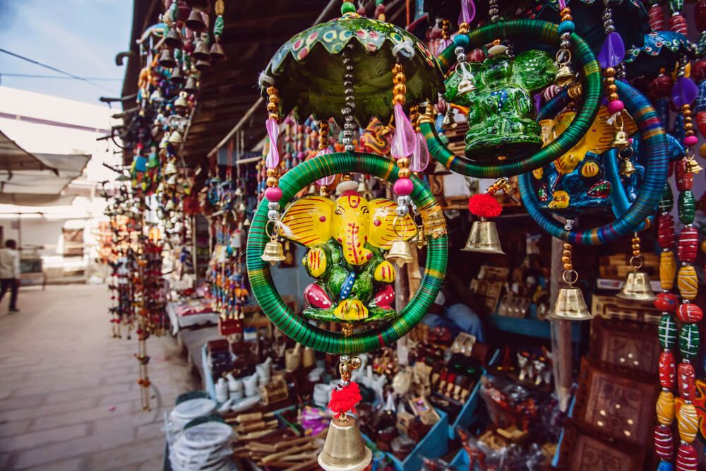
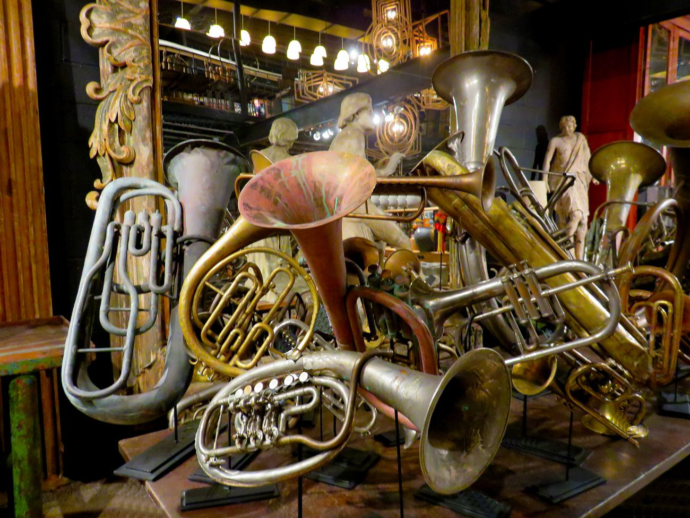

Meerut occupies a prominent place in the map of India as a popular industrial as well as agricultural hub.
Sports goods, embroideries, food and agro-based products, scissors, musical instruments, sugar are some of
the important manufacturing industries here. With the confluence of people from all over, Meerut is a
popular destination for shopping too, and some of the best buys of this area are sports goods, hiking and
golf equipments, clothing and embroidery and musical instruments. Meerut, being a home for agro-based
products, is seen as a sourcing market place for a wide range of agricultural produce. The wide range of
organic food crops and produce can be sourced for, here in the city.
Some of the prominent markets are as follows:
Spread over 4,50,000 sq. ft., fully air-conditioned, with a 3-screen multiplex comprising of 30,000 sq. ft.
and huge food court to cater all taste buds. Having top-of-the-line brands, Shopprix realizes the
long-discussed novel idea of a Mall Hotel by having a 4 star hotel of 85 rooms and a banquet hall in the
mall. Modern management services, power-back up, air conditioning, 1000 parking space and top-quality safety
systems take it head and shoulders above any other mall in Meerut.
Retail, Entertainment, Services and
Hospitality Industry together to redefine the concept of a shopping mall.
Click to get the Location of Shoprix Mall
Abu Lane is great place to shop and eat, Abu Lane connects two major shopping places Begum Bridge ( also
known as Begum pool) and Sadar bazaar. Abu Lane is nice place to shop readymade cloths, shoes and for famous
chat's of Meerut, Lot of branded store are there to shop.You will find almost all the major brands there and
there
are lot of variety of shops.
Click to get the Location of Abu lane

One of the bigges bazaar in Meerut city and located near Abu lane.It has many shops to
purchase shoes ,cloths,jewellery,house hold items etc. Here you will get a lot of variety of
products from medium price range to expensive ones.It is the ideal place for shopping of variety of
cloths in Meerut.
The place can be compared with Connaught place in Delhi or Hazratganj from the point of view of
shopping. You can buy virtually every thing from kirana to daily hosiery to all branded products available
in Meerut. There are several eating joints and one small chat market. The market also consist several good
jewellary shops including Tanishq. The market has recently been beautified by Meerut cantonment board.
Click to get the location of Sadar bazaar
Lalkurti (literally red shirt; referring to British Infantry "Red coats" from colonial era).
It is one of the famous markets of Meerut.It is popular because of its very diversified
products in affordable range.Here you will get every item at a very low cost ,because of its
low cost products this market is always full of people.Here you can buy shoes ,cloths, curtains,table cloth
etc,
form low to medium price range.The items in this market are from different part of country.
Click to get the location of Laalkurti Market
Saraffa Bazaar which has around thousand showrooms of jewellers. It is said that
gold ornaments in Meerut are of good quality . The lanes in Saraffa
Bazzaar are too narrow and in a first glimpse it may not be inferred if this market may be such a huge
marketplace of jewellery.
Click to get the location of Saraffa Bazaar
A complete range of sports equipment dealers are present across the city. Meerut is acclaimed to be a one
stop market place to source a whole range of sports equipments ranging from sports gears and outfits, bats,
tennis and badminton racquets, hockey and golf sticks, etc. Besides other paraphernalia such as sports bag,
sports balls, nets are also manufactured here in town. The whole locality of Suraj kund is dotted with shops
selling sports goods and equipments, where one can get a great choice and bargain, as well. With the advent
of online business, a number of them have an online presence too.
Click to get the location of Suarj Kund

Meerut is the largest manufacturer of musical instruments and some of the families here have maintained the
tradition of making musical instruments for more than 150 years. Most of the musical instruments shops are
found around the Jali Kothi area. Although the city is famed for brass
musical instruments, there are several industrial units which manufacture all kinds of musical instruments
such as Guitar, Piano, violin, table etc. Miniature models of musical instruments are also a popular make
here. Most of these musical instruments industries are run as cottage industries that require skilled and
semi-skilled labor. With changing times, demand for electronic musical instruments and competition from
other markets have increased the production of musical instruments. In spite, the city has maintained
monopoly in the industry for many decades now.
Click to get the location of Jali kothi market
Central Market is one of the best place in Shastri Nagar, Meerut. It's a big market of clothes, shoes, Saree
and everything with having branded showrooms.
Central Market is also known for the hub of fast foods. You can have the best fast foods here with lots of
Clubs.
Central Market is also good for roaming with friends it has good scenario. Local shops, cosmetic stores,
food stalls are there. Stuff is good. Ethnic wear shops are also there, prices are moderate to expensive.
During summers, one can find many mobile icecream stalls there. Transport via e-rikshaw easily available.
Seems like a complete market.
Click to get the location of Central Market
PVS Mall is one of the famous shopping malls in Meerut. It is a one-stop destination servicing local and
from other parts of the city. The mall provides a broad range of services and goods. The mall aims to create
a unique shopping experience featuring a wide variety of retail, lifestyle and dining concepts tailored to
meet the changing lifestyle in the vibrant and dynamic hub of Meerut. The mall is a neat and spacious
environment to make your shopping experience comfortable and cosy. PVS Mall is a top-notch mall with
high-end quality facilities. The mall has lots of ample parking areas.
Click to get the location of PVS Mall
BEST Price in Meerut City, Meerut is a top player in the category Departmental Stores in the Meerut. This
well-known establishment acts as a one-stop destination servicing customers both local and from other parts
of Meerut. Over the course of its journey, this business has established a firm foothold in it's industry.
The belief that customer satisfaction is as important as their products and services, have helped this
establishment garner a vast base of customers, which continues to grow by the day. This business employs
individuals that are dedicated towards their respective roles and put in a lot of effort to achieve the
common vision and larger goals of the company. In the near future, this business aims to expand its line of
products and services and cater to a larger client base. In Meerut, this establishment occupies a prominent
location in Meerut City.
Click to get the location of Best price